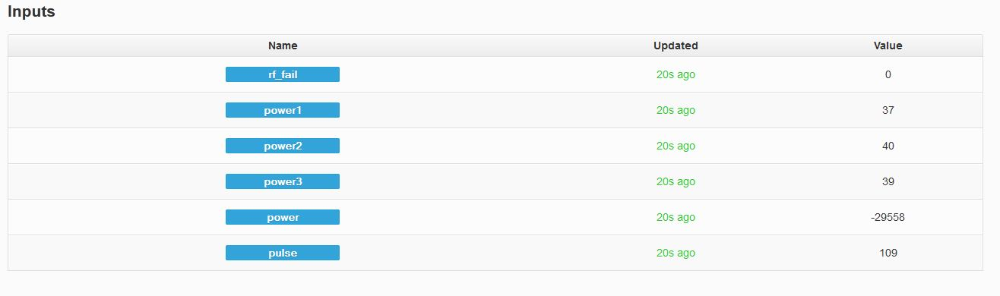

Can't seem to get basic Pulse Counter working, tried everything. I set up arduino with led flashing every 200ms. After failing to get Pulse sketch working I tried simple code from "OpenEnergyMeter Understanding Code part 5. Output prints ok on coms but getting zero. When I jack out I get spurious readings.
Setup
Wired optical sensor to plug as per guide diagram assuming "Data" on plug connects to "OUT" on sensor. Is this correct?
code
long pulseCount = 0;
unsigned long pulseTime,lastTime; // Used to measure time between pulses
double power;
int ppwh = 1; // pulses per watt hour - found or set on the meter.
void setup()
{
Serial.begin(9600);
// pulse detection interrupt (emontx pulse channel - IRQ0 D3)
attachInterrupt(1, onPulse, FALLING);
}
void loop()
{
Serial.print(power);
Serial.print(' ');
Serial.println(pulseCount * ppwh); // watt hour elapsed
delay(1000);
}
// The interrupt routine - runs each time a falling edge of a pulse is detected
void onPulse()
{
lastTime = pulseTime;
pulseTime = micros();
pulseCount++; // count pulse
power = int((3600000000.0 / (pulseTime - lastTime))/ppwh); // calculate power
}
Coms
0.00 0
0.00 0
0.00 0
0.00 0
0.00 0
0.00 0
see attached pic for setup
Re: Pulse Counter Single feed
Try verifying that the pulse sensor is working by doing a digital read on Dig 3. It should be 1 when the sensor is exposed to light and 0 in the dark. What sensor are you using?
Are you using an emonTx? If so you will need to solder the solder jumper to connect the pulse counting port Vcc to either 5V or 3.3V. I recommend 5V if you powering the emonTx from a usb/ftdi cable.
Re: Pulse Counter Single feed
Thanks Glyn,
I'm using Emontx and haven't added solder jumper yet. Can you please guide me on where to put jumper, assume 3.2V as I'll be using batteries. I've attached picture of connections I think are relevant. It probably obvious to the more experienced guys but I couldn't seem to find where to place jumper anywhere on build guide or forum.
Re: Pulse Counter Single feed
Sorry, I think this is our faut for not explaining this better. Calling it a 'jumper' is perhaps a bit misleading. It's more of a solder link. You need to link the middle pad to the right pad using a blob of solder to select 3,3V.
Re: Pulse Counter Single feed
Soldered link and the pulse sensor is working fine, tried simple sketch and read Pin 3 as you suggested and also when using test led from Arduino for pulses varying between 10-1000ms duration. Will try 3 X CT and 1 X pulse sketch tomorrow - I'll keep you posted. Many Thanks Glyn
Re: Pulse Counter Single feed
My target configuration for one emontx is 3 X CTs and 1 X pulse. My method is to mix and match code from emontx_CT123 and emontx pulse (see attached). It works fine for CT123 and Pulse count. However the power reading is negative (see attached screenshot). I tried latest emontx.Pulse and I get negative value for power also.

Re: Pulse Counter Single feed
Tried some basic testing and found the following results using arduino basics blinking sketch to flash led and only changed delay timer to get pulse rates below. Used pulse sketch below - only change was to add line to print to coms.
For the purpose of my project the pulse rate is below 50 so I'm ok with above issue. I'm curious to know possible reason for wrong power calculations at 100 pulse per second and above as it is a simple calculation. My thoughts is it must be something to do with timer for last pulse.
Re: Pulse Counter Single feed
I plan to use pulse counts only and not calculate power.
It would be useful to produce hourly and daily totals based on accumulating pulses Could input processing tool be used to this end?
Re: Pulse Counter Single feed
As building a pulse counter for my air-to-air heatpump rpm counter (which is needed to calculate output kw) I searched for pulse counting introduction. When reading this it occured into my mind that if trying to use millis within interrupt function its possible that it does not work correctly. Vaguely recall that millis() itself may generate an "interrupt" which prevents reading the time incorrectly or alternatively can cause the program to fail.
Therefore decided to implement this function differently;
void onPulse() {rpmcount++;}
void loop()
{
....
//
// Calculate rpm by using how many times the interrupt has been called
//
if (LED_rpm !=0) {if (rpmcount >= 5) {digitalWrite(LED_rpm,LOW);} else {digitalWrite(LED_rpm,HIGH);}} // first blink the led
if (rpmcount >= 10) // then calculate the rpm
{
rpm = 1000/(millis() - timeold)*rpmcount;
timeold = millis();
rpmcount=0;
emontx.rpmhp = rpm;
}
....
}